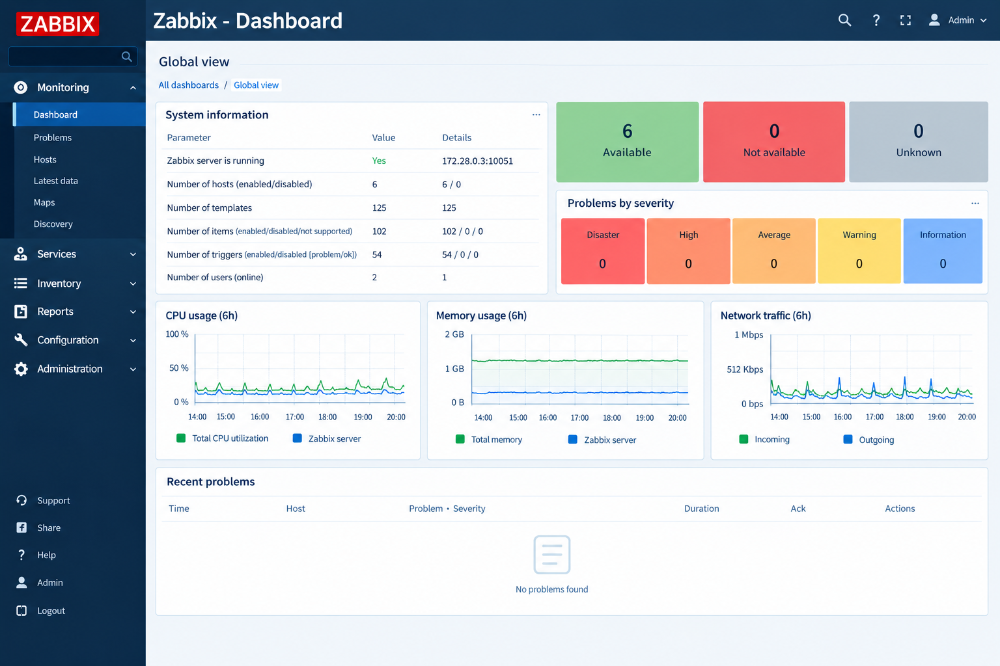
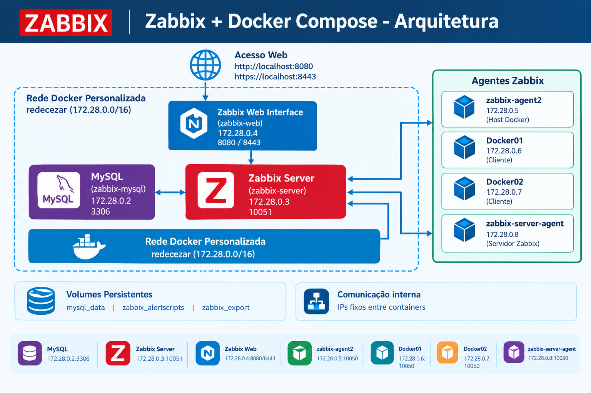
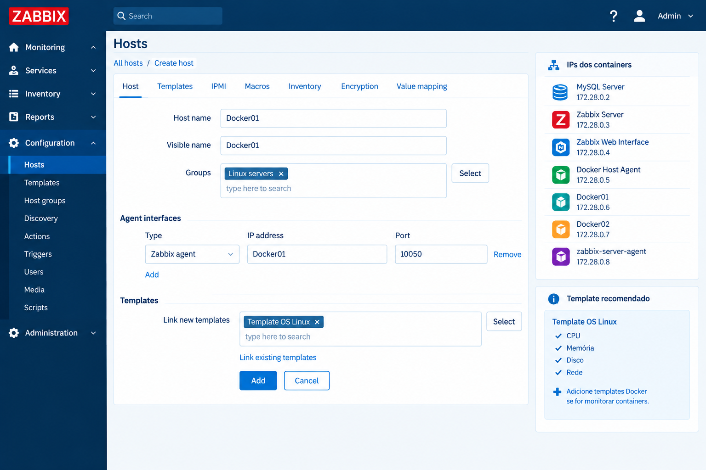
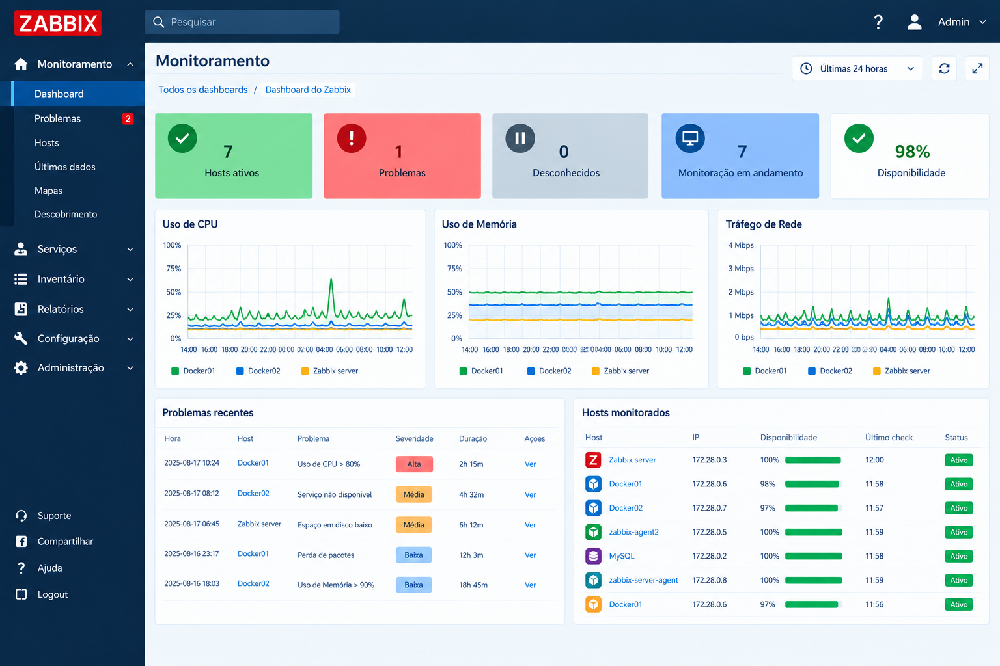

Projeto Zabbix + Docker Compose
Ambiente completo de monitoramento de infraestrutura desenvolvido com Zabbix, Docker Compose e MySQL.
O projeto foi desenvolvido para demonstrar a criação de uma plataforma de monitoramento capaz de acompanhar diferentes hosts e serviços através de uma infraestrutura baseada em containers.

Tecnologias Utilizadas
Sobre o Projeto
Este projeto cria um ambiente completo de monitoramento utilizando o Zabbix executado em containers Docker.
A solução integra servidor Zabbix, banco de dados MySQL, interface web e agentes responsáveis pela coleta de métricas dos hosts monitorados.
O ambiente utiliza uma rede Docker personalizada, volumes persistentes e endereços IP definidos para facilitar a comunicação entre os serviços.
Arquitetura do Ambiente
A infraestrutura é composta por diferentes containers conectados através da rede Docker redecezar.

🗄️ MySQL
Banco de dados responsável por armazenar informações do Zabbix, incluindo itens, triggers e históricos.
Container: zabbix-mysql
Volume: mysql_data
📊 Zabbix Server
Responsável por receber e processar as métricas coletadas pelos agentes, além de processar triggers e alertas.
Container: zabbix-server
🌐 Zabbix Web
Interface gráfica utilizada para administração, configuração e visualização das métricas e alertas.
HTTP: 8080
HTTPS: 8443
🖥️ Zabbix Agents
Os agentes são responsáveis pela coleta de informações dos hosts monitorados.
Hosts: Docker01, Docker02 e Zabbix Server.
Componentes do Projeto
- MySQL: armazenamento das informações do Zabbix.
- Zabbix Server: processamento das métricas, eventos e alertas.
- Zabbix Web Interface: gerenciamento e visualização do ambiente.
- zabbix-agent2: monitoramento do host Docker.
- Docker01: host simulado para monitoramento.
- Docker02: segundo host simulado.
- zabbix-server-agent: monitoramento do próprio servidor Zabbix.
- redecezar: rede personalizada para comunicação entre os containers.
- Volumes persistentes: preservação dos dados importantes do ambiente.
Como Executar o Projeto
1. Subir os containers
docker compose up -d2. Verificar os containers
docker ps3. Acessar o Zabbix
Após iniciar os containers, acesse a interface web através de:
http://localhost:8080
https://localhost:8443Usuário padrão: Admin
Senha padrão: zabbix
Configuração da Rede Docker
O projeto utiliza uma rede personalizada chamada redecezar.
Essa rede permite a comunicação entre os containers através de endereços IP definidos.
Listar as redes Docker
docker network lsInspecionar a rede
docker network inspect redecezarO comando permite visualizar os containers conectados, endereços IP e informações da rede.
Estrutura de IPs
Os containers utilizam endereços IP dentro da rede 172.28.0.0/24.
| Container | Endereço IP |
|---|---|
| MySQL Server | 172.28.0.2 |
| Zabbix Server | 172.28.0.3 |
| Zabbix Web Interface | 172.28.0.4 |
| Docker Host Agent | 172.28.0.5 |
| Docker01 | 172.28.0.6 |
| Docker02 | 172.28.0.7 |
| Zabbix Server Agent | 172.28.0.8 |
Configuração dos Hosts no Zabbix
Para adicionar um novo host ao monitoramento, acesse:
Configuration → Hosts → Create HostExemplo: Docker01
- Host name: Docker01
- Grupo: Linux servers
- Interface: Zabbix Agent
- IP: Docker01 ou 172.28.0.6
- Porta: 10050

Templates de Monitoramento
Após criar o host, é possível vincular templates para coletar automaticamente métricas do sistema.
🐧 Template OS Linux
Permite acompanhar diversos indicadores do sistema operacional.
- CPU
- Memória
- Disco
- Rede
- Disponibilidade
🐳 Monitoramento Docker
Pode ser utilizado para acompanhar informações relacionadas aos containers e ao ambiente Docker, quando configurado.
O mesmo procedimento pode ser repetido para Docker02 e os demais hosts que serão monitorados.
Gerenciamento do Ambiente
Parar o projeto
docker compose downReiniciar o projeto
docker compose up -dOs volumes persistentes permitem manter os dados importantes mesmo após a parada ou reinicialização dos containers.
Resultado do Projeto
O projeto demonstra a implementação de uma solução de monitoramento utilizando Zabbix e Docker Compose, permitindo acompanhar diferentes hosts através de uma única plataforma.
A infraestrutura criada permite aplicar na prática conhecimentos relacionados a monitoramento, redes, containers, Linux, banco de dados e administração de infraestrutura de TI.
